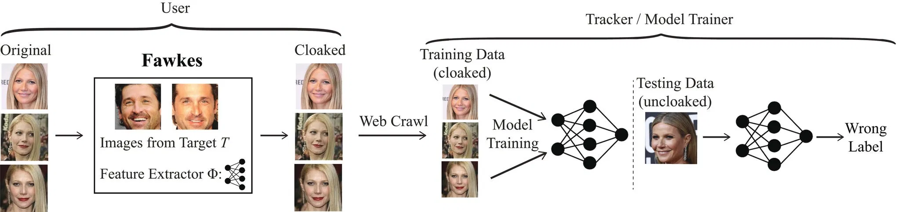
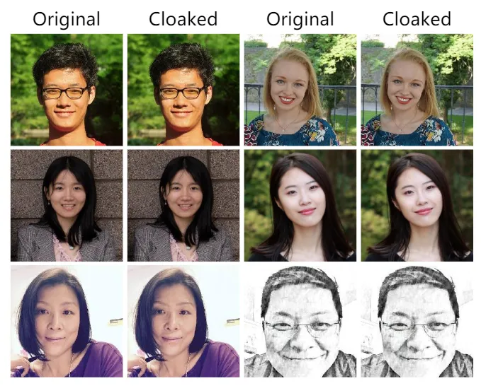
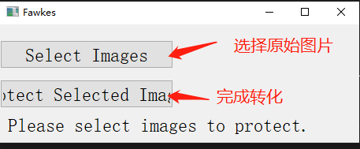

人脸识别是一个既方便又安全的个人鉴权解决方案，被应用在各个场景中，从各种app，打卡门禁，到遍布各处的自动售卖机，已经和我们的生活密切结合了，不过可别掉以轻心，安全问题无小事
脆弱的人脸识别
1
今天看到的一条新闻 ，给人脸识别的安全问题打上了大大的问号，怎么回事呢？
近日上海警方在查处一起伪造发票案时，牵出了一个破解人脸识别案，犯罪嫌疑人通过简单的手段，获取了大量的人脸信息
然后利用“活照片” app，把获取到的照片做成可以点头、摇头、眨眼，张嘴的视频
再通过劫持手机摄像头软件，轻松骗过手机的人脸识别环节
从而攻破广泛用于管理电子营业执照 App 的人脸识别系统，疯狂的开设虚假发票
2
之前也有破解人脸识别的新闻，依托清华大学人工智能研究院成立的团队瑞莱智慧，披露过一个研究成果：
研究人员根据一张照片，通过研究算法，制作一副特殊“眼镜”，就可以刷脸解锁他人手机或App身份认证。
戴上自制眼镜后，15分钟内破解了19款智能手机的人脸识别解锁系统，同样被破解的还包括十余款金融和政务服务类App。
研究人员表示，结合身份证号等个人信息，甚至可冒充机主完成线上银行开户。
3
这些新闻只是“人脸识别”黑产中的冰山一角
记者发现，网上存在大量提供破解人脸识别技术服务的群组，通过各种技术，用很便宜的价格，为客户提供各种场景的人脸识别服务，比如上班打卡考勤，甚至可以通过特殊的手机，随便破解运行在手机上的人脸识别应用，而且价格低廉
看的这里，我都不敢再随便晒我的头像了
防止破解
面对这样的情况，专家不断地呼吁各方提高安全意识，敦促相关部门提高安全等级，修补安全漏洞……
这些无可厚非，但对于我们每个个体来说，远水解不了近渴，我的得主动出击做我们能做的，保护自己
1 头像分享需谨慎
通过调查可知，大部分都是通过窃取互联网上的用户头像训练以及进行突破人脸识别的
那么我们在分享个人头像时，就要谨慎，对于公信力不高的平台，最好不要轻易上传头像或者有脸的照片
2 个人信息保护劳
另外为了提高安全等级，很多人脸识别系统会配合采集个人信息作为副助验证，增强一定的安全性
那么我们就不要随便将个人信息泄露出去，特别是姓名，手机号，身份证号，这些关键信息，至少不要一起提供到不靠谱的平台上
3 主动防御
除了这些主动的通过习惯防范的方式，还有什么方法吗？
当然有，所谓魔高一尺道高一丈，那么是为我们的头像戴上面具
为照片带上面具
Fawkes 是由芝加哥大学 SANDLab 研究人员开发，针对面部识别系统的隐私保护工具
它可以通过 AI 计算，为照片添加一层防识别 “隐身衣”，经测试，其已在最先进的面部识别技术中取得了百分百的胜利。
我们先看一组照片：
能看出两种照片的不同吗？
如果不仔细看是看不出来，甚至就算仔细看了，也未必能看出来
上面的图片中，左边的是原始图片，右边的是经过 Fawkes 伪装过的
神奇的是，经过处理后，人眼几乎看不出差异，而在机器看来却是完全不同的两张脸
这是如何实现的呢？
借用 Fawkes 为照片穿上隐身衣 这篇文章上的解释：
Fawkes 在公开的研究论文里，详细描述了实现原理，不过比较复杂，简单来说就是：
Fawkes 并不是让你的照片对人脸识别系统隐形，而是通过代码做了一些微调，让你看起来好像另一个人，这个人可能时不存在的虚拟人像
关于虚拟人像，可参考 99% 的人并不知道 AI 生成人脸已经达到什么水平
Fawkes 原理示意图：

前者是基于 Fawkes 算法来生成用户图像的伪装版本，后者是通过追踪器（Tracker）从网络资源中检索伪装的图像，并使用它们来训练未经授权的面部识别模型。最终可以发现模型输出的图像与原始图像并不相同
这是官方给出的效果对比：

应用
看着很热闹，如何应用呢？
Fawkes 提供了两种应用方式
第一种是桌面应用，提供了 MAC 和 Windows 的下的软件，下载后直接使用即可
而且使用起来简单粗暴：

转化完后，会保存在原始图片所在的目录里
第二种，可以安装 Fawkes 命令行工具
首先需要有 Python3.6 及其以上版本
然后需要安装 TensorFlow 2.0 以上版本，具体安装方法可以参考 TensorFlow 安装
最后使用 pip 安装 Fawkes
1 | pip install fawkes |
如果安装成功，就可以直接使用命令 fawkes 了
命令行参数为：
-m，--mode指定隐私和干扰等级：min，low，mid，high。干扰等级越高，对图像的干扰越大，并提供更强的保护。-d，--directory指定要操作的图片目录。-g，--gpu使用 GPU 进行优化时指定的 GPU ID。--batch-size
批量优化的图像数量--format
指定输出图像的格式（png 或 jpg）
示例
1 | fawkes -d ./imgs --mode min |
将当前目录 imgs 里的所有图片以最小保护力度进行批量处理
两种保护方式各有好处，可根据自己实际情况选择
总结
虽然人脸识别还有待提高安全性，但办法总问题多
我们在加强安全意识的同时，可以利用技术手段提高自我保护的力度
这才是真正有效的方式，也是让自己不断强大起来的方式
这下，妈妈再也不用担心我的头像安全问题了，就聊到这里吧，赶紧去换一下社交网络上的头像
比心